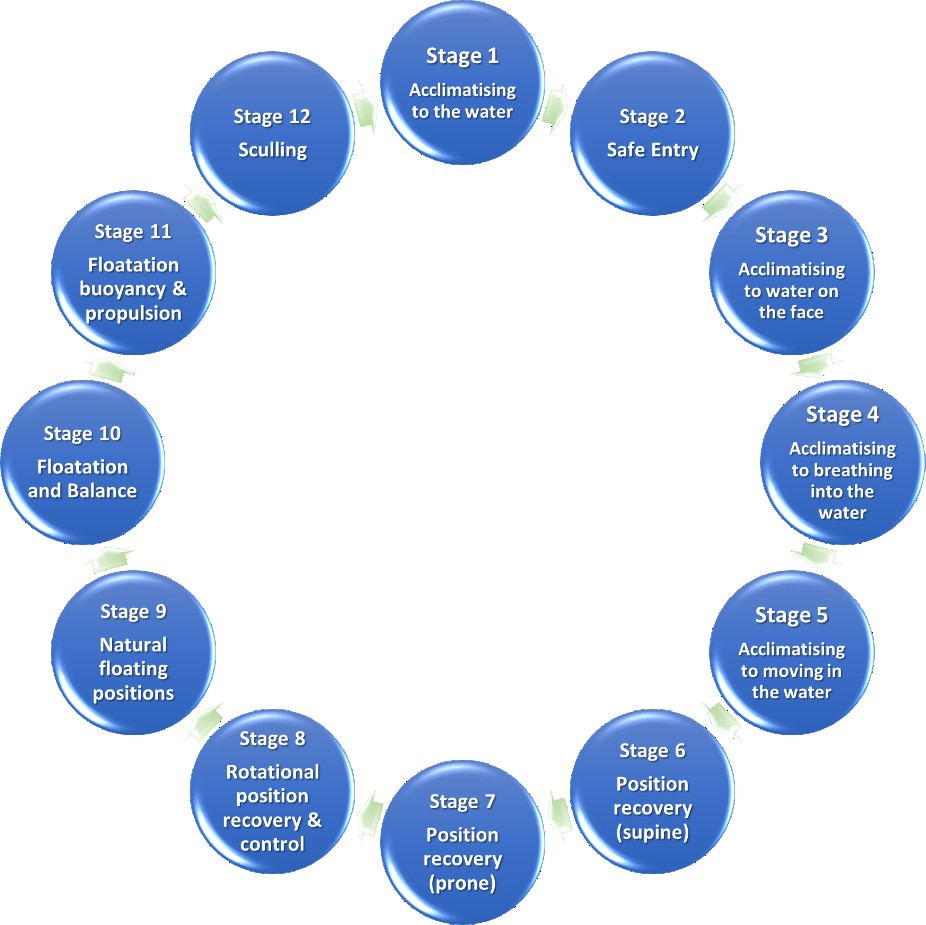

Understanding and Overcoming the Fear of Water
"The need for aquaphobia training is so important within Australia, as it is now very much a multi-cultural society. We have many people who cannot swim or have a fear of water." — Debbie Gill, IOA head tutor (Aus)
Aquaphobia is a persistent fear or anxiety triggered by being near areas of water that causes avoidance behaviours and stress reactions.
Symptoms include panic attacks, rapid heartbeat, sweating, dizziness and intense distress when close to water.
The IOA was started in the UK and is now reaching a worldwide audience.
The mission of the IOA is to bring together people whose interest is either professional or private interest to help people overcome their fear of water, therefore helping them to overcome the stresses of phobia, creating a more enjoyable lifestyle of recreation and relaxation water can bring.
Clients are helped to overcome their fear/phobia through a 12 steps plan assisted by a specialized Aquaphobia Coach. Clients are treated with respect and empathy and at a pace that will achieve the best outcome.
Aquaphobia often stems from traumatic experiences involving water during childhood or adulthood.
Learned behaviours from family or social environment can contribute to the development of aquaphobia.
Genetic predisposition and psychological conditions increase the risk of developing aquaphobia.
Lack of swimming skills and negative childhood water experiences are significant risk factors. Including unsafe or unclean water environments.
Aquaphobia significantly affects social activities and personal safety among Australians.
Fear of water leads to social isolation and reduced participation in water-related events. Causes mental and emotional distress and suffering.
Aquaphobia limits access to recreational and occupational activities involving water environments.
Individuals share their experiences of overcoming aquaphobia through the Institute's supportive programs and guidance.
Success stories motivate others facing similar challenges to seek help and begin their journey toward water confidence.
Educating communities about aquaphobia helps raise awareness and reduces stigma surrounding the condition.
Providing access to proven therapies enables individuals to overcome their fear of water successfully.
Creating supportive environments encourages individuals facing aquaphobia to seek help and build confidence.
"The need for aquaphobia training is so important within Australia, as it is now very much a multi-cultural society. We have so many people who cannot swim or are scared of water and swimming. This affects everybody regardless of age, sex, religion or ethnicity."
Here at the Geelong Aquatic Centre, we have trained our swimming teachers, who are now IOA Advanced Aquaphobia Coaches, to be able to help anyone who has had a traumatic experience in or around water.
We will help you to overcome your fear. Learning key foundation skills that allow each person to be happy and safe in water is a real game changer.
We are delighted to announce that the Geelong Aquatic Centre has become the first IOA "Centre of Excellence" in Australia for all aquaphobia type training.
I discovered the Institute Of Aquaphobia training a couple of years ago and it has changed my entire approach to teaching as well as opened my eyes to a whole community of people who were hidden or hiding in plain sight. To be a part of a person's transformation from a slave to aquaphobia to taking back control is pretty amazing!
Born and raised in New Zealand, I come from a family long involved in swimming and water safety. I specialised in adult learn-to-swim and adaptive swimming for physical disabilities.
I am joining IOA Australia as an Advanced Aquaphobic Coach and an International IOA Tutor, based on the Sunshine Coast, Queensland.
A significant turning point in my career was discovering the Institute of Aquaphobia. The course fundamentally changed my perspective. I learned that aquaphobia coaching is not about shielding people, but about demonstrating empathy, patience, and fostering a safe environment where individuals build confidence step by step.
The institute focuses on in-depth research to better understand the fear of water.
Programs are designed to help individuals gradually overcome their fear through support and education.
Collaboration with the community strengthens efforts to empower individuals nationwide.
Ready to overcome your fear of water? Our certified aquaphobia coaches are here to help.
Course Enquiries or an assessment please contact us at the Geelong Aquatic Centre or www.instituteofaquaphobia.com